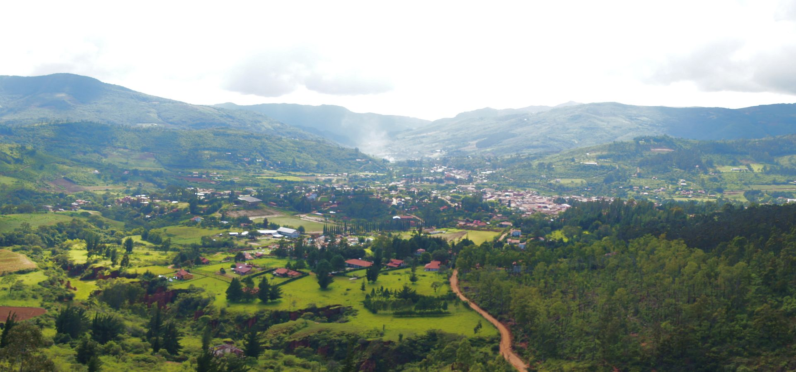

Africa
Being the second largest continent in the world, Africa has tonnes to offer to overland tourers. From open planes spanning as far as the eye can see to rainforest routes and deadly deserts, there is something to cater to all genres of adventurers. Spend a week on safari in the serengetti to see the big 5 and then change it up completely and head down south to see the likes of the Kalahari.
Americas
Both North and South America have a multitude of Overland options. Travel from the Northern part of the continent via the likes of the Rocky Mountains down to Yellowstone National Park and then further on South Towards Latin America. Pass through Mexico and head deeper into the more inhabited spots like Patagonia and the other mountainous regions.
Click on options to see some Ideas
Kenya
Kenya has so much to offer to Overland Tourers. It is home to the second highest mountain in Africa, Mount Kenya. As you tour through Kenya you will be treated to a variety of wildlife in the safari parks such as Masai Mara and also the beautiful landscapes like lake Naivasha, one of the most popular spots to see along your way.
Tanzania

Engage your inner safari explorer and spend a week in the Serengeti national park. Follow the elephants and girraffes as they wander peacefully through the open planes. Camp by lake Ngorongoro and listen to the grumbles of the Lions and the laughs of the Hyenas during the night.
Zambia
Zambia is home of the source of the Zambezi river, Pack up your stuff and allow the river guide you on your adventure. Pass through the wildlife parks and spend your nights below the stars once again.
Namibia
Namibia is the country of extremes. It offers red sand deserts, huge open grasslands and incredible rock formations. Travel through the Namib desert or follow the Majestic elephants through Etosha National Park.
Botswana
Overlanding through Botswana, you can travel through the famous Okavango Delta or the Kalahari desert whict stretches down to South Africa. There is also the option of Chobe National Park which claims the highest elephant population in the southern part of Africa.
South Africa
South Africa is a beautiful country with many destinations perfect for Overland adventuring. Visit Kruger National Park or Explore the rivers through the winding gorges of Tsitsikamma. If you fancy something more chill then there are options such as Cape Town or Johannesburg for some nice food and some rest & relaxation.
Alaska
Alaska is home to the Dalton Highway. It is 414 miles of the most dangerous roads in the U.S. See some of the most amazing wildlife in the baron lands and follow the Yukon river.
Rocky Mountains
Drive along the Alpine Route in Silverton. This route offers some of the most exciting roads and most beautiful views of the Rocky Mountains!
Yellowstone National Park

Spend some time in exploring the Yellowstone National Park. Watch the Grizzly Bears in their natural habitat and experience all the other wildlife in the area such as the large number of American buffalo in their herds.
Patagonia
Travel through Argentina and Chile via wild Patagonia. Visit the Fjord of Last Hope in Chile and journey through the incredible landscapes of the wild to the likes of Los Glaciares National Park in Argentina
Bolivia
Bolivia has tonnes to offer the Overland Adventurer. Visit the mind bending salt flats and venture along the worlds most dangerous road near La Paz, You won't be left short of things to do in this Country.
Peru
Peru is a must see country. Visit the old Inca sites like Machu Picchu, explore lake Titicaca and its mystical floating Islands, Journey through the Nazca Desert to see the phenominal geoglyphs, the Nazca Lines.